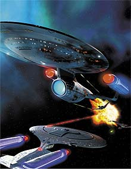
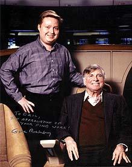
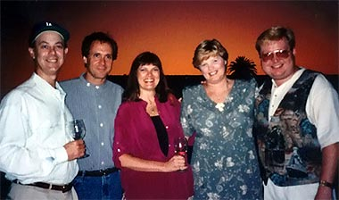
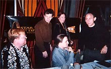
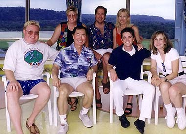

Trek
Brasilis -
Voc costuma mencionar que era f de Jornada muitos
anos antes de se envolver com a srie. Qual o sentimento
quando um f consegue executar a difcil tarefa que fazer a
transio entre assistir ao show e participar dele?
Eric Stillwell - Foi incrvel para mim quando me tornei um
assistente de produo de Jornada nas Estrelas: A Nova Gerao,
em 1987. No comeo no parecia de verdade -- parecia um sonho.
E certamente era um sonho tornando-se realidade. Mas a natureza
do trabalho logo se fixa e algumas vezes diz s pessoas que
elas devem tomar cuidado para ter certeza de que seus sonhos no
vo virar pesadelos. A longo prazo, trabalhar com Jornada
no foi diferente de nenhum outro trabalho -- houve os bons e
os maus dias. Talvez, por ser um f antes de mais nada, os dias
ruins tenham sido mais frustrantes do que eles seriam em um
trabalho "normal". De alguma forma eu esperava mais
das pessoas que faziam Jornada, e logo descobri que essas
pessoas no eram diferentes de qualquer outro grupo que est
trabalhando em qualquer tipo de coisa em qualquer parte do mundo
-- h as pessoas legais e as pessoas no to legais, onde
quer que voc v. Ainda assim, como f, foi incrvel
trabalhar na srie e uma experincia que nunca esquecerei.
TB - Voc creditado como
"pesquisador" para a segunda temporada de A Nova
Gerao. Como voc primeiro se envolveu com Jornada?
Stillwell - Eu conhecia algumas das pessoas do escritrio
de Gene Roddenberry antes de trabalhar em Jornada --
especificamente, Susan Sackett. Eu sabia que seria difcil, mas
no impossvel, arrumar um emprego em Jornada sem
nenhuma experincia trabalhando em TV ou filmes. Ento, antes
de me mudar para a Califrnia, eu decidi fazer o que eu pudesse
para aprender mais sobre a indstria do entretenimento. Durante
meus tempos de faculdade, eu vivia em casa com meus pais em
Eugene, Oregon, e meu primeiro emprego foi em uma locadora de vdeo.
Enquanto trabalhei l, assisti a tantos filmes quanto possvel.
Um dia li no jornal que a Warner Bros. TV viria ao Oregon para
fazer um filme de TV chamado "Promise", estrelando
James Garner e James Woods. Eu imediatamente liguei para o
escritrio de produo em Los Angeles a perguntei se poderia
trabalhar na produo enquanto eles tivessem filmando em locao
no Oregon. Eles no concordaram de cara, mas me convidaram a
visitar seus escritrios de produo no primeiro dia de
filmagem, e eu imediatamente me fiz indispensvel, atendendo
telefonemas, fazendo fotocpias de roteiros e me oferecendo
para fazer o que pudesse para ser til. No final da semana eu
estava ajudando o administrador de locao a preparar mapas
para as vrias locaes de filmagem na regio. Porque eu
estava trabalhando como "voluntrio", o pessoal do
escritrio de produo ficou com d de mim e arrumou uma
ponta como figurante do filme -- acabei aparecendo como uma
pessoa ao fundo em uma das cenas do James Garner. No dia
seguinte, um dos diretores assistentes foi demitido e mandado de
volta a Los Angeles. Ento eles me contrataram para ser um
assistente de produo durante o restante das filmagens no
Oregon. Quando a filmagem terminou, pude voar com a equipe de
produo at Los Angeles para a festa de concluso do filme.
Durante esta viagem a Los Angeles, descobri que a Paramount
estava planejando fazer uma nova srie de Jornada.
Imediatamente enviei meu novo currculo (com todas as minhas
recm-obtidas experincias trabalhando em "Promise")
para a Susan Sackett. Ela entregou meu currculo para o
produtor Robert Justman. Alguns meses depois, voltei a Los
Angeles para fazer um teste de admisso para o Programa de
Treinamento de Assistente de Diretor oferecido pelo Sindicato
dos Diretores dos EUA. Embora eu no tenha entrado no programa,
consegui uma entrevista com Robert Justman. Eles estavam
procurando dois assistentes de produo para Jornada nas
Estrelas: A Nova Gerao. Aps a entrevista, voltei para
o Oregon e esperei para saber se o trabalho seria ou no meu.
Pouco tempo depois, recebi uma amvel carta de Robert Justman
explicando que eu no fui escolhido porque eles decidiram optar
por duas pessoas que j trabalharam na Paramount e estavam
familiarizadas com o estdio. Inabalado, decidi mudar para Los
Angeles mesmo assim. Logo que cheguei, decidi procurar um
emprego na Paramount -- para colocar o p na porta, por assim
dizer. Em agosto de 1987, fui contratado como um "page"
para o setor de Relaes Pblicas de Convidados da Paramount.
Os "pages" so jovens que do tours do estdio e
providenciam coordenao de pblico para shows de auditrio.
No fim de setembro, meu chefe perguntou se eu estaria
interessado em trabalhar em uma festa particular da primeira
exibio de A Nova Gerao para o elenco e a equipe.
As produes freqentemente contratam "pages" do
estdio para trabalhar nas portas e listas de convidados para
as exibies dentro do estdio. Naturalmente pulei sobre a
oportunidade. E nunca esquecerei que quando Rick Berman
apareceu, eu no encontrei o nome dele na lista e no ia deix-lo
entrar na exibio! Quem podia imaginar? Mas tambm encontrei
Robert Justman naquela noite e ele se lembrou de mim, da
entrevista que eu tinha feito, e ficou surpreso ao descobrir que
eu agora estava trabalhando no estdio. Alguns dias depois, um
dos assistentes de produo originais foi promovido e Justman
me chamou e ofereceu o trabalho. O resto, como dizem por a,
histria.
TB - Seu primeiro trabalho
creditado como escritor em Jornada nas Estrelas a histria
de "Yesterday's Enterprise", um conceito
originalmente escrito e abandonado durante a segunda temporada
de A Nova Gerao e resgatado durante a terceira
temporada. H muitas diferenas entre a histria original e a
que foi ao ar?
Stillwell - No final da segunda temporada, eu me ofereci
para fazer considervel pesquisa para o episdio final da
temporada, chamado "Shades of Gray". Por causa
de uma greve de roteiristas em Hollywood, e para economizar, o
estdio decidiu fazer um "clip show" e passei 80
horas de uma semana compilando todas as informaes sobre os
clipes de episdios anteriores que seriam necessrias para
produzir o episdio. Foi assim que consegui meu primeiro crdito
de tela como "pesquisador". Na poca, eu j havia
sido promovido a Coordenador de Roteiros e estava trabalhando
diretamente para o lder do grupo de escritores da srie. Um
dos roteiros especulativos que foi submetido durante a segunda
temporada foi de Trent Ganino, chamado "Yesterday's
Enterprise", onde a Enteprise-D encontra a Enterprise-C,
que chegou nossa poca por acidente e precisa ser mandada de
volta antes que mude a histria. Era uma histria que lidava
primariamente com o dilema de Picard de contar ou no a essas
pessoas que o retorno delas tambm resultaria em suas mortes, e
saber se esse conhecimento mudaria ou no o curso da histria.

Imagem ciada para a capa da
revista Star Trek
Magazine para comemorar o 10 aniversrio
do episdio "Yesterday's Enterprise" |
Aps o lanamento de Jornada
V, Trent e eu comeamos a colaborar em uma idia diferente
que envolvia a morte acidental de Surak, o fundador da filosofia
Vulcana moderna, durante uma expedio arqueolgica feita com
o Guardio da Eternidade (de "The City on the Edge of
Forever"). Como resultado da morte de Surak, os
Vulcanos nunca evoluram como os conhecemos hoje e terminaram
formando uma aliana com os Romulanos para destruir os Klingons.
Na poca em que os encontramos, eles resolvem se dedicar a
destruir a Federao. Estamos em guerra. E porque a linha do
tempo foi alterada e os Klingons se foram, Tasha Yar sobreviveu
para lutar mais uma vez. No final, o pai de Spock, Sarek, que
estava a bordo da Enterprise e inalterado pela mudana
temporal, convence Picard a deix-lo retornar para o passado de
Vulcano via Guardio da Eternidade para corrigir o problema.
Com efeito, Sarek substitui Surak e se torna o fundador da
filosofia Vulcana moderna. Quando mostramos essa idia aos
produtores, eles pediram para que tirssemos o Guardio da
Eternidade e Sarek, e de algum modo combinssemos o resto com o
conceito original de Trent para "Yesterday's Enterprise".
Eles queriam manter Tasha (porque eles sabiam que Denise Crosby
estava interessada em retornar) e queriam que usssemos Guinan
como a pessoa que convence Picard de que algo est
terrivelmente errado. E assim que o episdio se desenvolveu.
TB - "Yesterday's
Enterprise" tido como um dos melhores episdios de A
Nova Gerao. Ele tambm conhecido como um dos mais
confusos em termos do processo de roteirizao. Voc poderia
nos dar alguns insights sobre o que aconteceu na poca?
Stillwell - O problema principar era a falta de tempo.
Para termos Denise Crosby e Whoopi Goldberg no mesmo episdio
ao mesmo tempo, a agenda de produo teve de ser adiantada em
mais de um ms. Como resultado, o roteiro precisava ser escrito
em quatro dias, o que aconteceu durante o fim de semana de Ao
de Graas. Para faz-lo, cada membro da equipe de roteiristas
ficou de escrever um ato e quando eles voltaram do fim de
semana, juntaram tudo em questo de dias. Todo mundo estava
convencido de que seria um desastre, mas no final ficou
brilhante.
TB - O crdito de histria para "Yesterday's
Enterprise" abriu portas para mais participaes na srie?
Stillwell - Ns podamos bolar outras histrias, o que
fizemos por vrios anos, mas eu no vendi outra histria at
a primeira temporada de Jornada nas Estrelas: Voyager. Eu
co-escrevi a histria para "Prime Factors".
TB - Voc agora trabalha junto com
Michael Piller, na companhia de produo dele. Voc o
conheceu durante os tempos de A Nova Gerao?
Stillwell - Sim. Na verdade comecei a trabalhar na Nova
Gerao em 1987. Michael entrou para o time e se tornou o
escritor principal em 1989. Eu j era o Coordenador de Roteiros
na poca, e Michael passou a ser meu supervisor imediato.
TB - Embora voc tenha alguns crditos
como criador de histrias, voc nunca chegou a ponto de
escrever os roteiros. Por qu?
Stillwell - Acho que meus colegas e eu nunca tivemos a
experincia que os produtores estavam procurando para nos
confiar a tarefa de escrever um roteiro. Pagar algum para
escrever um roteiro caro, por isso talvez eles quisessem usar
roteiristas mais experientes. No caso de "Yesterday's
Enterprise", simplesmente no havia tempo suficiente
para nos deixar faz-lo, mesmo que eles quisessem. Durante a
primeira temporada de A Nova Gerao escrevi um roteiro
especulativo chamado "Shattered Time", que todo mundo
adorou. Quase todo mundo. Maurice Hurley, que era o
roteirista-chefe na poca, amou o roteiro e queria compr-lo.
O administrador da produo amou. At os executivos do estdio
amaram. Infelizmente, Gene Roddenberry preferiu passar, por isso
nunca aconteceu. Algumas vezes o sucesso em Hollywood menos
uma questo de talento do que de sorte de estar no lugar certo,
na hora certa.
TB
- Voc poderia falar mais dessa histria perdida, "Shattered
Time"?
Stillwell - "Shattered
Time" era sobre a Enterprise descobrindo uma civilizao
que se extinguiu centenas de anos atrs, mas estranhamente no
h nenhuma indicao do que teria acontecido com eles. Aps
mais investigaes, o grupo avanado descobre uma bonita
civilizao que parecia fascinada por espelhos. Acontece que
os espelhos so passagens similares ao teletransporte feitas
para levar a abrigos anti-bombardeio, em caso de guerra. Em rbita,
a Enterprise encontra um desses objetos -- algo como um espelho
gigante no espao -- mas antes que eles possam ajustar o curso,
a Enterprise passa pelo espelho e entra em outra dimenso cheia
de armas orbitais, como ogivas nucleares que ficaram presas ali.
Na superfcie do planeta, o grupo avanado descobre que a
civilizao inteira ainda est viva, mas presa no outro lado
dos espelhos em uma dimenso suspensa. Porque ningum ficou do
lado de fora para libert-los, eles ficaram presos para sempre.
Eventualmente nossos heris descobrem um modo de reverter a
tecnologia (o "Shattered Time") e a populao
retorna para seu mundo com uma nova perspectiva de um sistema de
defesa que supostamente teria sido desenvolvido para salv-los
da guerra. A histria era uma alegoria do sistema de defesa de
msseis proposto pelos EUA, chamado "Guerra nas
Estrelas".
TB
- Voc
teve a oportunidade de acompanhar Jornada nas Estrelas
desde os primeiros anos da Nova Gerao, que trouxeram
o franchise a uma posio em que quase se tornou um programa
de massa, at a ltima produo para cinema, "Insurrection",
que no teve bom desempenho nas bilheterias norte-americanas.
Como voc v, da vantajosa perspectiva de quem olha pelo lado
de dentro, a evoluo do franchise durante todos esses anos?
Stillwell - Essa uma questo difcil. A Nova Gerao
era muito popular e tinha uma enorme audincia de TV, comparada
s outras sries em syndication. Deep Space Nine e Voyager
eram menos populares e nunca tiveram a mesma sorte da Nova
Gerao. Mesmo assim, os filmes da Nova Gerao tm
obtido um sucesso moderado, com menor audincia recentemente
para "Insurrection". Eu no estou certo se h
uma nica razo para o declnio em popularidade ou se
apenas uma questo de qumica entre os personagens e sua audincia,
que mudou ao longo do tempo. Eu acho, dos filmes em particular,
que "Insurrection" estava competindo com a
crise nacional na televiso norte-americana -- o impeachment do
presidente Clinton, o bombardeamento do Iraque e outras distraes,
poucos dias antes do Natal. No mercado internacional, "Insurrection"
foi muito bem para um filme de Jornada. Eu acho que as
preocupaes domsticas nos EUA podem ter prejudicado o
sucesso de bilheteria daquele filme. Eu ainda acredito que o "Insurrection"
ir sobreviver ao teste do tempo, porque um filme muito bom
que permanece verdadeiro viso de Gene Roddenberry para Jornada
nas Estrelas.
TB
- Alm de seus crditos como escritor, voc tambm teve a
oportunidade de ser um figurante (embora no-creditado) em "Jornada
nas Estrelas VI: A Terra Desconhecida". Voc era um
dos aliengenas presentes conferncia de Khitomer?
Stillwell - Na verdade, eu era um dos Klingons no
julgamento do capito Kirk e do doutor McCoy em Kronos. Ns ramos
aqueles na platia com as lanas que faziam um baita barulho.
Trent Ganino, meu colega de "Yesterday's Enterprise",
foi um dos juzes Klingons naquela mesma cena. Foi trabalho
duro. Levou dois dias inteiros para filmar aquela cena. Os
figurantes tinham que vestir essas horrveis mscaras de
borracha que dificultavam a respirao, e o jeito que as mscaras
se encaixavam nos figurinos nos faziam ficar presos com elas 12
horas por dia. Ns s podamos remover as mscaras na hora
do almoo. Por causa da fumaa que era bombeada no set para
dar aquela atmosfera Klingon e dos brilhantes holofotes sobre ns,
era muito quente dentro das mscaras, e desconfortvel. No
segundo dia, muitos dos figurantes no apareceram. Durante
nossa parada para o almoo no primeiro dia, Mark Lenard
apareceu para experimentar um figurino e acabou almoando
conosco. Ele era uma pessoa muito legal. Pelo fato de as roupas
Klingons terem sido coletadas de uma poro de lojas de
figurinos em Hollywood, Mark pensou que a vestimenta de couro
que eu estava usando parecia muito com a roupa do general Urko
que ele usou uma vez na srie de TV "Planeta dos
Macacos". Foi muito divertido!
TB - Como foi ter a chance de
falar, ou ao menos estar prximo a Bill Shatner, Leonard Nimoy
e todos os outros membros da srie original -- pessoas que voc
costumava ver viajando pelo espao desde que voc era criana?
Stillwell - Foi um sonho virando realidade encontrar
todos os meus heris em pessoa! DeForest Kelley era meu
favorito. Ele era um homem muito bom e generoso. Leonard Nimoy
foi muito atencioso. Eu tive uma longa conversa com ele uma vez
em Indianapolis, Indiana, uma noite antes de uma apario em
uma conveno em que ele iria anunciar sua deciso de no
aparecer em "Jornada nas Estrelas: Generations".
Ele estava muito preocupado em como os fs iriam reagir. Minhas
experincias com William Shatner foram menos que memorveis.
Ele no particularmente afvel. No posso dizer que gostei
das vezes em que estive perto dele. Nichelle Nichols uma
senhora adorvel. Sempre gostei de trabalhar com ela, assim
como com Jimmy Doohan. Jimmy muito generoso. Ele convidou
minha me e eu para jantar aps uma conveno em Boise,
Idaho, e nos ofereceu uma elaborada refeio com vinho e
drinks. George Takei tambm um de meus favoritos. George
muito consciente poltica e socialmente. Ele pode falar sobre
praticamente qualquer assunto com grande autoridade. Minha
esposa e eu desfrutamos de sua companhia em vrias viagens do
Cruise Trek. Ele pode entret-lo por horas com histrias de
suas experincias e sua viso de situaes sciopolticas
de todo lugar do mundo.
TB - Qual era o sentimento geral
nas filmagens daquele filme?
Stillwell - Se voc pergunta do Jornada VI, foi
divertido. Todo mundo trabalhou duro, mas eles se divertiram
fazendo. Muitas pessoas acreditaram que seria o ltimo filme
para o elenco original, e para mim era o primeiro. Porque
Michael Dorn tambm estava na mesma cena que eu, interpretando
seu prprio av, pareceu para mim que Jornada havia
completado o crculo, com o passado encontrando o futuro.
TB
- Trocando para o outro filme com o qual voc esteve envolvido,
vamos falar sobre a ltima produo cinematogrfica de Jornada,
"Insurrection". Voc foi creditado como
"Associado de Produo", mas voc disse ter
trabalhado como coordenador de roteiros. Qual foi a sua
participao no filme?
Stillwell - Meu crdito oficial no filme foi
"Associado de Produo", que um ttulo genrico
para cobrir uma variedade de papis sem ofender nenhum
sindicato. Embora eu tenha servido como Coordenador de Roteiro
para o filme, trabalhando primariamente para o escritor, Michael
Piller, j h um crdito oficial do sindicato dado ao
Supervisor de Roteiro, que um trabalho de produo no set.
Meu trabalho acontece principalmente em um escritrio, onde sou
responsvel pela digitao, leitura de provas, impresso e
distribuio do roteiro e de todas as revises. Eu tambm
era o assistente executivo de Michael Piller, o que continuo a
ser hoje.
TB - O que voc achou do resultado
final obtido em "Insurrection"?
Stillwell - Eu acho que o filme acabou saindo muito bom.
um filme divertido e que entretm. Baseado em tudo que
ocorreu no planejamento e desenvolvimento do roteiro -- todas as
notas do estdio, dos atores etc. -- acho que saiu exatamente
do jeito que deveria. Eles queriam que fosse diferente de "Primeiro
Contato" e penso que atingimos esse objetivo. Os
Romulanos deveriam ter sido os viles principais na verso
original do roteiro, e acho que teria dado maior impacto dramtico
do que introduzir um grupo inteiramente novo de malvados. Mas
certas pessoas no quiseram usar os Romulanos, ento eles
foram retirados da verso final. Eu acho que foi um erro. Mas
baseado no que foi pedido ao escritor, ao diretor e aos
produtores, acho que o resultado final foi muito bom.
TB - Voc tambm escreveu a histria
para "Prime Factors", um dos primeiros episdios
de Voyager. A srie mudou um pouco desde ento. O que
voc acha do atual estado de Voyager?
Stillwell - Para ser honesto, estou desapontado com o
fato de Voyager nunca ter capturado o senso de descoberta
que me atraiu para a srie original, e algo que eu acho que
ajudou em parte a fazer da Nova Gerao um sucesso.
Como f, eu queria audaciosamente ir onde ningum jamais
esteve, e Voyager teve essa oportunidade quando eles
foram para uma poro totalmente nova e inexplorada de nossa
galxia. Mas acabou virando muito tpico, muito rotineiro.
Toda semana encontramos novos aliengenas, mas nunca h um
senso de descoberta ou do Desconhecido. como dirigir pela
cidade e visitar uma vizinhana diferente a cada semana, em vez
da sensao de pousar na Lua pela primeira vez. Eu espero que
agora, aps todos esses anos, eles finalmente retornem
Federao. Eu acho que seria um jeito interessante de terminar
a srie.
TB - Muitas pessoas percebem a
atual equipe de produo de Jornada no meio de uma
guerra civil. Robert Beltran dispara sobre os roteiristas, os
produtores respondem fogo, acompanhados por Kate Mulgrew. A
personagem de Jeri Ryan, Seven of Nine, acusada de ter muita
ateno e tempo de tela, a despeito de outros personagens, e
tivemos alguns eventos "estranhos", como a sbita ida
e vinda de Ronald D. Moore como roteirista para a srie, aps
o fim de Deep Space Nine. Jornada no a mesma
que costumava ser ou esse tipo de conflito realmente normal
durante uma grande produo de TV como Voyager?
|

Eric Stillwell com
Gene Roddenberry na
ponte da Enterprise (NCC-1701-D) |
Stillwell - Jornada
definitivamente no a mesma que costumava ser. Para mim,
houve uma dramtica mudana filosfica aps a morte de Gene
Roddenberry. Gene era muito idealista. Ele era a alma de Jornada
nas Estrelas. Ele pode no ter sido to pragmtico como o
estdio e a equipe de produo precisavam que ele fosse, mas
enquanto Gene esteve vivo, Jornada tinha um sentimento
lendrio sobre ela. Quando Gene morreu, eu acho que uma parte
de Jornada morreu com ele. Em anos recentes, houve
definitivamente algumas mudanas infelizes nos relacionamentos
entre diferentes indivduos envolvidos com as sries de Jornada
nas Estrelas. Algumas foram tristes e patticas, algumas
simplesmente infantis. Eu no diria que isso singular na
produo de Jornada, mas certamente no algo que
deveria ser considerado "normal" em qualquer produo.
provavelmente igual aos problemas que ocorrem em qualquer
grande organizao de negcios. Apenas recebe mais
publicidade por causa da natureza do negcio e o vido
interesse dos fs.
TB
- Quais as diferenas entre trabalhar para Gene Roddenberry,
Rick Berman, Michael Piller e Jeri Taylor? Como voc v os
diferentes estilos de conduzir uma produo?
Stillwell - Gene Roddenberry sempre foi amistoso e
gracioso, fez uma poro de festas de aniversrio em seu
escritrio para a equipe, sempre fez festas de feriado. Quando
me tornei Coordenador de Roteiros, Gene estava passando as operaes
do dia-a-dia para Rick Berman no escritrio de produo e
para Michael Piller no departamento de roteirizao. Trabalhei
supervisionado por Michael Piller. Ele era muito concentrado em
realizar o trabalho e levar as coisas de volta ao rumo certo aps
uma temporada catica causada pelas greves e pela rotatividade
da equipe de escritores durante o segundo ano de A Nova Gerao.
Estvamos muito atrasados com os roteiros e essencialmente
escrevendo semana aps semana com o que quer que pudssemos
colocar no papel rpido o suficiente. Michael foi timo para
colocar ordem nas coisas, mas pelo fato de ter gasto tanto tempo
por trs de portas fechadas com os roteiros, ou em reunies,
muitos de ns nunca tivemos uma chance real de conhec-lo
pessoalmente. Ele estava sempre concentrado no trabalho, era difcil
saber o que ele estava pensando ou como estava se sentindo. Rick
Berman essencialmente se tornou o presidente da operao de Jornada
nas Estrelas aps Gene ter se afastado da operao do
dia-a-dia. O estilo autoritrio de Rick fez alguns de ns
temerosos de cometer erros. Ningum queria cruzar com ele. Mas
uma vez que voc passa do duro exterior, Rick um cara do
tipo brincalho que muito srio quando se trata de fazer o
trabalho direito. Jeri Taylor, a primeira mulher a se tornar
produtora-executiva e co-criadora de uma srie de Jornada,
era como a "mame" da equipe. Ela sempre era generosa
e reconfortante e sempre queria ajudar as pessoas. Todo mundo ia
at ela com seus problemas e ela sempre tornava as coisas
melhores. Conforme ela assumiu mais e mais responsabilidades,
especialmente com a criao de Voyager, acho que ela se
tornou mais sria, ou talvez o estresse e as exigncias do
trabalho tenham simplesmente feito dela uma pessoa mais sria.
Acho que ela ficou bem feliz de se aposentar e deixar muito do
estresse e das exigncias para trs.

Michael Piller, Rick
Berman, Sandra Piller, Debra Stillwell e
Eric Stillwell
TB
- Voc
tem ainda algum envolvimento com Jornada?
Stillwell - No exatamente. Mas como assistente de
Michael Piller, ocasionalmente digito suas notas de histrias e
roteiros. Como Consultor Criativo para a srie, Michael
continua a fornecer retorno para todos os episdios de Voyager.
Fora do escritrio, ainda estou envolvido com o Cruise Trek e
outros eventos relacionados a Jornada. Ainda sou
convidado para convenes de Jornada de tempos em
tempos. Gosto especialmente das viagens para fora do pas.
TB - Alm de histrias para episdios,
voc tambm escreveu a histria para "The 34th Rule",
um livro escrito por Armin Shimerman e David R. George III.
Quais foram as diferenas entre criar para um episdio e criar
para um livro?
|

Noite de
autgrafos de "The
34th Rule" em
Las Vegas com Eric Stillwell,
Max Grodenchik
(Rom), Lolita Fatjo, David R. George III e
Armin Shimerman (Quark) |
Stillwell - Quando David e eu comeamos a trabalhar
com Armin, estvamos na verdade desenvolvendo vrias histrias
para oferecer aos produtores de DS9 como episdios para
a srie. De fato, ns oferecemos nossas histrias, mas eles no
estavam interessados. Em vez de simplesmente perd-las,
pensamos que talvez pudssemos vender uma delas como uma histria
em quadrinhos ou ento um livro. Os quadrinhos no deram
certo. Ento mandamos vrias histrias para a Pocket Books, e
The 34th Rule foi a que eles gostaram. Daquele ponto em
diante, era importante expandir a histria para um livro, j
que uma novela muito mais complexa e detalhada que um episdio
de uma hora. Dali pra frente, todo o trabalho foi feito por
David e Armin, j que eu no estava interessado em realmente
escrever o livro. Essa a razo pela qual meu crdito
apenas pela histria. Aps David e Armin expandirem a histria
para o livro, David escreveu e Armin forneceu comentrios
durante a fase de edio.
TB - Como foi trabalhar com
Shimerman neste projeto?
Stillwell - Armin Shimerman uma das mais generosas e
criativas pessoas que j conheci. Foi muito fcil trabalhar
com ele. Foi 100% um prazer e uma honra trabalhar com ele.
TB - Nesses tempos incertos,
algumas questes so inevitveis. Voc sabe alguma coisa
sobre a prxima srie de Jornada, atualmente sendo
desenvolvida por Rick Berman e Brannon Braga?
Stillwell - Honestamente, no. Eu apenas ouvi os rumores
sobre um show que seria anterior srie original -- sobre o
incio da Federao. Eu no ouvi nada mais.
TB - E se a deciso estivesse em
suas mos, o que voc acha que daria uma grande srie de Jornada?
Stillwell - Primeiro, acho que daria uma parada por
alguns anos. Exceto por filmes, acho que no deveria ter Jornada
aps Voyager por pelo menos dois anos. Ento, diria que
hora de se aproveitar dos incrveis avanos tecnolgicos
que ocorreram na produo de televiso e nos efeitos visuais.
Em vez de ir para trs, em uma poca que deveria parecer
primitiva comparada Jornada de hoje, eu iria para o
futuro --vamos fazer "Jornada nas Estrelas: No Sculo
25". Iria introduzir a prxima gerao da nave estelar
Enterprise e tentaria recapturar o sentimento de descoberta e
explorao -- a busca pelo Desconhecido. Mande a nave atravs
do vasto desconhecido entre nossa galxia e a galxia de Andrmeda
(com nova e avanada tecnologia) e deixe a explorao comear
de novo na borda de uma galxia inteiramente nova -- bem longe
de casa. Como a srie original. V audaciosamente explorar
novos mundos e civilizaes! Faa coisas novas e incomuns,
perigosas e diferentes. Novas aventuras empolgantes para uma
nova gerao de exploradores.
TB - Sobre o prximo filme, voc
sabe de alguma coisa?
Stillwell - No sei nada sobre o novo filme, exceto que
um escritor chamado John Logan escreveu um roteiro. Ouvi um
rumor de que os Romulanos podem estar envolvidos, o que achei
estranho depois que pediram que os tirssemos da histria
original de "Insurrection".
TB - Voc est desenvolvendo algo
agora que gostaria de comentar?
Stillwell - No ano passado Michael Piller e sua companhia
produziram um piloto de fico cientfica chamado Day One,
que era baseado em uma minissrie britnica chamada The
Last Train. Ela seguia as aventuras de vrias pessoas que
sobreviveram cataclsmica destruio da Terra aps o
impacto de um asteride, mas esto congeladas no tempo e
acordam 70 anos no futuro. Infelizmente a rede no encomendou a
srie, ento provavelmente nunca ser feita. Este ano estamos
trabalhando em uma comdia de meia hora sobre fantasmas para a
rede da WB. E estamos tambm desenvolvendo uma srie dramtica
de uma hora para a UPN baseada em "The Dead Zone", de
Stephen King.
TB - Voc gostaria de participar
de um evento de Jornada no Brasil?
Stillwell - Com certeza. Eu adoro encontrar fs de Jornada
ao redor do mundo. No ano passado conheci vrios fs de um
clube de Jornada em Barcelona, Espanha. Fui convidado
para comparecer a uma conveno na Itlia este ano. Minha
esposa e eu j estivemos em convenes no Reino Unido,
Alemanha, Canad e Austrlia. Cada ano viajamos com vrias
centenas de fs de Jornada no Cruise
Trek. Os fs vm de todos os cantos do mundo. Esse ser
nosso sexto ano viajando com o Cruise Trek e gostamos de
encorajar outros fs a se juntarem a ns. Sempre nos
divertimos bastante com maravilhosos atores de Jornada e
lugares exticos.

Fileira de cima:
Debra Stillwell com os organizadores do Cruise Trek Charles
Datin e Linda Wolfe. Fileira de baixo: Eric
Stillwell, George Takei (Sulu), Jonathan del Arco ("I, Borg")
& Cecily Adams (Moogie, de DS9). A
foto foi tirada no Cruise Trek, no Canal do Panam
TB - Alguma mensagem para os
trekkers brasileiros?
Stillwell - Felicidades e saudaes de Los Angeles.
Minha esposa e eu esperamos que um dia possamos visitar seu pas
e conhec-los pessoalmente em uma conveno de Jornada!
Keep on trekkin!
Entrevista realizada em janeiro de 2001.
|